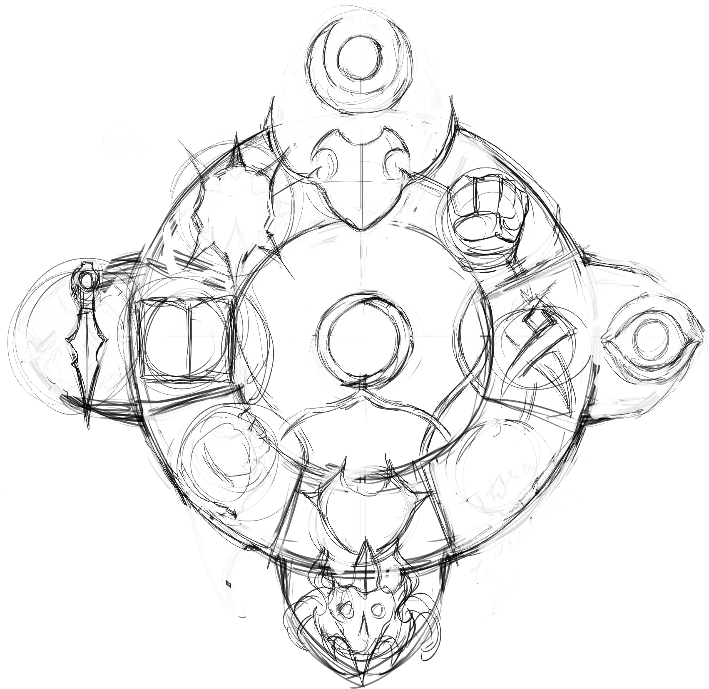

ALIGNMENTS
For every heart of good resides one of hatred. For every servant of chaos, there is a servant of law. The realm of Avorkarth's inhabitants are many and varied, though all act accordingly, although loosely, to an alignment rule system. Such is the same for any created character. Alignments are the basis of a character's response and reaction to an event, and how it would affect them. A law abiding character seeing a crime done right in front of them may try to sop it or inform the local guards, while a more chaotic character may chuckle and simply watch to see where the whole affair will go.
However, not all species are capable of any alignment, as that is a gift, or a curse, that is mostly held by humanity. Many species in the lore book have limitations due to their creators, gods and other influences throughout the ages. Remember, only a human acts as a human.
THE THIRTEEN ALIGNMENTS
ALIGNMENTS
ALIGNMENT DESCRIPTIONS
NEUTRAL - “SURVIVOR”
Neutral characters only seek to continue living and are the most common type of character. They do not care that their actions fall between good or evil, law or chaos, as long as they do not go hungry or thirsty. Should a conflict occur, neutral characters would seek the side that aids them the most.
TRUE NEUTRAL - “SEEKER”
True Neutral characters seek the truth of all things, be it in the balance of the mind and heart, the mysteries of the arcane or the secrets of life and death. They are the seekers, who do not judge but simply listen and learn. They are much rarer than the traditional Neutral characters.
NEUTRAL GOOD - “CHAMPION”
Neutral good characters seek to bring good and well-being wherever they travel. They treat others well, counsel and aid those in need and will go out of their way to do the right thing, as long as this does not bring harm to those close to them or that which they consider good. In times of darkness, Neutral characters will defend those who follow their path, but are not entirely vindictive to those willing to repent, accordingly letting live those who have done evil as long as they are punished accordingly.
NEUTRAL EVIL - “VILLAIN”
Neutral Evil characters are those willing to do evil to further their own agenda. They seek to better their standing in life and are ready to do harm to others should it aid them in achieving this goal. Neutral Evil characters are quick to bargain and to scheme in the event of tragedy, seeking to aid themselves before anyone else can capitalize on the happenings. Characters of this alignment have no problem with evil acts as long as they gain something out of it, but will not gain extreme pleasure nor remorse from the action.
LAWFUL NEUTRAL - “JUDGE"
Lawful Neutral characters are those not easily swayed to good or evil and who act upon an iron moral code. These characters will listen and find their path upon the facets of information given to them, often making their decision based solely upon what knowledge is currently available. They usually do not act rashly, but they are surprisingly stubborn once their decision is made, unless additional information comes to light. Whenever an event of destruction occurs, they will investigate to know what truly happened so as to make a proper judgement.
CHAOTIC NEUTRAL - “WHIMSICAL”
Chaotic Neutral characters do whatever they wish to, whenever it comes to them, without regard to the end destination or reward. Chaotic Neutral characters may seem to distrust authority, but it is more truthful to say that these characters are simply spontaneous and are given to a wider range of quick-minded thoughts which drift to individuality as well as freedom per person. Should a tragedy occur, these characters will often give their skills to use, though as to why, none but the character can really say. Chaotic Neutral characters tend to be questioning, curious and whimsical, and with a dislike or rules and restrictions.
LAWFUL GOOD - “CRUSADER"
Lawful Good characters follow a given ruleset, be it divine scripture or a personal code, that tells of virtues. These characters are set in their ways of good and will always aid those that are within their care, no matter the cost. They stand before darkness and evil always, their rules guiding their every action. However, this also makes them hard to reason with, and a Lawful Good character will carry out their duty against wrong-doers and creatures their code views as evil, their forgiveness very hard to gain.

Most citizens of the realm simply wish for a peaceful existance, content within the saftey of their community.
ALIGNMENTS
LAWFUL EVIL - “DOMINATOR”
Lawful Evil characters are bound to the nature of power. The strong dominates the weak, and the truly strong need not break their own ruleset to achieve such power. Tradition and loyalty are of great value to the Lawful Evil character, yet they do not understand mercy or kindness for they view it as a weakness. Lawful Evil characters understand that rulesets aid in keeping the structure of their might intact, but aren't beyond massacering what is necessary and will easily take pleasure in the pain of others to either gain more power or show their dominance.
CHAOTIC GOOD - “RENEGADE”
Chaotic Good characters are individualistic beings above all. They view the idea of having rules wrong as their beliefs often tell them that not everything is cut and dry. These characters often will carry out what they believe is for the greater good, even should it bypass the laws in place and may be of benefit only in the moment of things. Though the hearts of chaotic good characters are kind and loving, they do not always agree with the larger picture or with the set rules if it harms or is unfair to another of their kind. Nonetheless, they would stand side by side with even Lawful Good characters against those of evil intent.
CHAOTIC EVIL - “MANIAC"
Chaotic Evil characters do whatever is upon their mind, as long as it brings them pleasure or satisfaction regardless of any who are in the way of their current scheme. Unpredictable, Chaotic Evil characters are prone to simply be evil for the sake of being evil, without the need or reward of power or riches. These characters adore breaking rules and causing mayhem wherever they go and will do so at every turn, even turning on those who were allies mere moments ago. As such, these characters' schemes often do not last long as they so easily turn upon themselves.
TRUE GOOD - “FORGIVER”
True Good characters are often viewed as naive, for they are characters that will always seek the good in every encounter. These characters will go out of their way to aid everyone and everything on both sides of an argument, attempting even to bring those of darkest hearts to light. Characters of True Good following will often lend a hand to anyone if simply asked or if they see that something is wrong, even often bringing pain upon themselves if it means helping another. They are easily tricked by evil characters, but sometimes their absolute kindness and gentleness softens and redeems those of dark intent or turns the most hardened lawful character into one willing to stand with an enemy to face a greater threat.
TRUE EVIL - “DESTROYER”
True Evil characters are exactly as their given title describes them. They seek pure destruction in all of its forms and have few other impulses or goals that drive their actions. Their purpose is single-minded, and that is to bring their own flaming vision of the world with no regard to anything or anyone else. Such characters are very far and few between, and while many would think that these characters are foolishly straight-forward, only their goal is as such and many True Evil characters can be very manipulative in furthering their cause against life itself.
TRUE LAWFUL - “ZEALOT”
True Lawful characters are beings bound to the laws given to them. They follow this rulest methodically and will never sway from it, no matter the situation. As such, a True Lawful character is hard to associate with since they will not forgive even a single deviation from their code and will harsly deal out justice to any who would defy or cross the will of the code or being they serve.
TRUE CHAOTIC - “FANATIC”
True Chaotic characters have abandonned reason, no longer abiding to laws or rules of any sort except their own. They are much like True Evil characters in which they would erase all things living, yet would not replace it with their own vision as they have none. Characters that are of this alignment are usually corrupted or taken over by a spell of madness. The few characters who are True Chaotic by nature tend to be followers of deities of insanity and pandemonium, heading cults whose goal is to simply erase exsistance itself.

In order to protect humanity, the Eonnan clergy are swift and harsh in their punishment of those they suspect as evil.